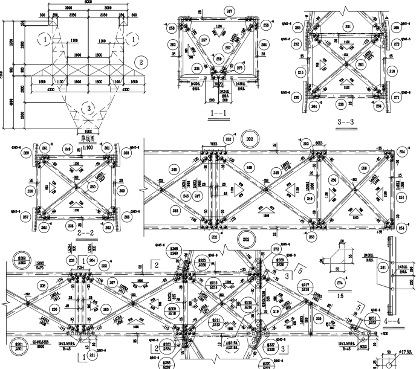

01
一次性三维生成ONE-SHOT GENERATION
图纸 / 图片→等待→最终模型
- 适合概念草图与快速预览
- 局部错误往往需要整体重新生成
- 无法回答构件来自哪里、为何这样连接
- 最终文件缺少稳定身份与工程关系
开源结构重构 AI Agent Skill
NeuBE SR 不只生成一个三维模型。它让 AI 在真实、可追溯的结构工程中工作，把工程资料变成可以检查、修改、验证并继续使用的结构项目。
NEUBE-STRUCTURAL-REBUILD · 2026
两种工作方式
差别不在模型看起来多漂亮。 差别在于结果能否被追问、修正、验证，并在下一轮工程工作中继续存在。
02 · 一次性生成 vs. 结构项目
图纸建模 · 完整塔头

从工程图纸读取尺寸、标注和构件关系。 通过几何求解与结构核验，形成可检查、可交互的塔头三维模型。
03 · 工程图纸 → 完整塔头三维几何
长上下文建模 · M1–M6 完整塔架
跨页证据连续，跨视图身份一致，跨模块装配闭合。 M1–M6 分段连接、共享节点和模块依赖最终进入同一个结构模型。
04 · 多页 · 多视图 · 多模块
为什么这对 Agent 更重要
只会调用生成接口的 Agent，遇到错误只能重新生成。NeuBE 让 Agent 读取当前结构、执行确定性的工程动作，再把结果写回同一个项目。
读取来源、构件身份、连接关系、未决判断和当前版本，而不是从空白 Prompt 重新开始。
调用几何求解、CAD、领域规则与确定性验证器，对明确范围内的结构进行修改。
把新几何、关系、验证结果和版本状态写回，让下一位工程师或 Agent 接着工作。
05 · READ → ACT → WRITE BACK
你仍然拥有控制权
每一次变化都能回到它的来源、判断与版本。人可以继续检查、修正和移交，而不是被锁在一次黑盒输出里。
知道构件来自哪张图、哪个区域。
单独修正构件、关系或候选判断。
约束、残差和验证结果保持可见。
交付模型、结构数据和版本化制品。

来源 / 原始观察
保存图纸版本、页码、局部区域和原始字符串。当前状态只说“看到了什么”，不急于说“它是什么”。
06 · 可见 · 可修改 · 可验证 · 可移交
为什么完全开源
Apache-2.0 · 公开 IR · 独立验证器 · 支持领域包
规定 Agent 如何读证据、管理歧义、调用工具并组织一次结构重构。
agent behavior contract公开来源、观察、物理对象、关系、约束、输出和版本之间的结构。
public-ir.schema.json用可执行程序检查引用、稳定 ID、坐标、约束残差与制品完整性。
validate_public_ir.py把术语、构件本体、连接规则、求解器和验收方式沉淀为可复用领域包。
domains/<domain>07 · 方法 · IR · 验证器 · 领域包
开放共创 · OPEN TO COLLABORATION
你提供真实资料、专业术语和工程判断；我们共同定义构件、关系、约束与验收方式，把一次成功重构沉淀成可复用、可验证的领域包。
08 · 重构结构 · 重构推理